Analysis: from the design to the conclusion
The heart of SigmaPro: 74 analyses in 17 families, from the analysis of variance of an experimental design to mixed models, survival and time series (the other 4 summaries are in Explore, chapter 3). You choose them with the assistant, in the catalog or in the model builder, and they all respond the same way: a conclusion in words, tables, charts, assumptions, the R code that gives the same numbers and their fact sheet in Fundamentals.
- 4.1Three ways to choose an analysis
- 4.2The assistant
- 4.3The catalog
- 4.4The model builder
- 4.5How to read a result
- 4.6The R engine inside the browser
- 4.7–4.11Assumptions, tests, designs and means
- 4.12–4.17Regression, contingency, mixed and generalized models
- 4.18–4.24Nonlinear, multi-environment, multivariate, sampling, survival and time series
4.1Three ways to choose an analysis
At the top of the block, three buttons choose how you get to the analysis. All three lead to the same place (the same method with the same options), and you can switch from one to another at any time.
| Way | Who it is for | Section |
|---|---|---|
| Assistant | For those who know what they want to learn from their trial but not which analysis to use. A few questions in field language (what did you measure?, did you group the units into blocks?, was any factor applied to main plots?) and a recommendation with its reasons. It is the mode the block opens in. | 4.2 |
| Catalog | For those who already know which analysis they want: the complete list, grouped by families, with the form of each method. | 4.3 |
| Model builder | For those who think in terms of a model: you drag the variables to their roles (response, factors, blocks, random effects, covariates…) and the app writes the formula and chooses the analysis. The formula can also be typed by hand. | 4.4 |
Next to the three buttons, History lists the most recently computed analyses, with their variables and their data; choosing one reopens it (section 1.1). With no data loaded, the block offers to load them right there (Import a file, Paste a table or Try an example) or to go to Data; the calculations that need no data (sample size, power, replicates) open with Calculate a sample size or power, here or in Explore, which selects Power and sample size: means (t test) (section 4.22). If a filter is active in Data, the whole block works with the rows that pass it.
4.2The assistant
The assistant asks the questions a statistician would ask on seeing a trial for the first time, in order, and only the ones that are needed: each answer decides the next question. On the right, the recommendation is updated with each answer. The answers come already proposed from the data (what the card in section 2.13 recognizes), so often you only need to review them.
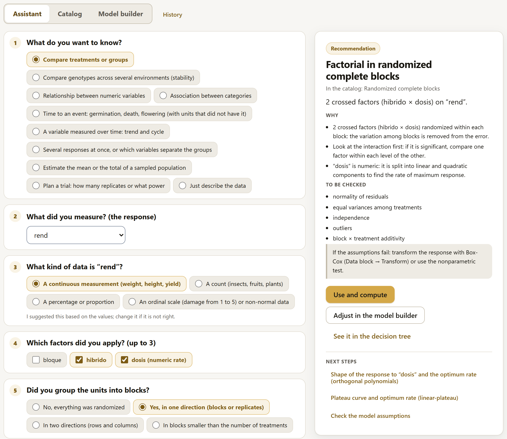
The questions
The first question, What do you want to know?, opens one of ten paths:
| Goal | What it asks next and what it usually recommends |
|---|---|
| Compare treatments or groups | The response and its kind (continuous, count, percentage, ordinal scale), the factors (up to 3), the blocks (none, in one direction, in two, incomplete), whether there were main plots or strips, whether there is a covariate measured before the treatment, whether the same unit was measured on several dates, whether the blocks are random and how to compare (all pairs, against a control, contrasts, or the curve of a rate). It recommends the corresponding design (sections 4.10 and 4.11), an ANCOVA, a repeated-measures analysis, a mixed model, a generalized model or a nonparametric test. |
| Compare genotypes across several environments | Response, genotype, environment, replicates and what you are interested in: the combined analysis, stability, AMMI or GGE (section 4.20). |
| Relationship between numeric variables | Whether there is a response to explain: with one predictor, the shape (straight line, curve, growth, dose-response, plateau); with several, all of them, stepwise, all combinations or a response surface. Without a response: a correlation, partial if other variables are controlled for (sections 4.12, 4.13, 4.18 and 4.19). |
| Association between categories | Whether they are different cases, the same case classified twice, two raters or an association across several lots, and whether the data come already counted (section 4.14). |
| Time to an event | The time, the event (1 yes, 0 censored), whether groups are compared and whether there are covariates: Kaplan-Meier or Cox (section 4.23). |
| A variable measured over time | The series, the time and what you are interested in: trend, cycle or autocorrelation (section 4.24). |
| Several responses at once | MANOVA or discriminant analysis (section 4.21). |
| Estimate the mean or the total of a sampled population | The variable and whether there were strata (section 4.22). |
| Plan a trial | Which variable will be measured, to take its variation from the loaded data: number of replicates or power (section 4.22). |
| Just describe the data | Takes you to the Explore block (chapter 3). |
The recommendation
The card on the right gives the recommended analysis and everything you need to decide whether to accept it:
- the title and, below it, the name under which it appears in the catalog;
- a sentence with what is going to be analyzed (2 crossed factors (hibrido × dosis) on “rend”);
- Why: the reasons, in terms of the trial (the variation among blocks is removed from the error; “dosis” is numeric: it is split into linear and quadratic components);
- To be checked: the assumptions the analysis puts to the test, and a box with what to do if they fail;
- warnings, when something in the data deserves attention;
- the Use and compute button, which opens the analysis in the catalog with its variables already set, and, when applicable, Adjust in the model builder, which takes it to the model builder (section 4.4), and See it in the decision tree, which shows the path that leads to that analysis among all the others (section 9.3);
- Next steps: the analyses that usually follow (the mean comparison, the rate curve, the check of the assumptions), each as a button that opens it directly.
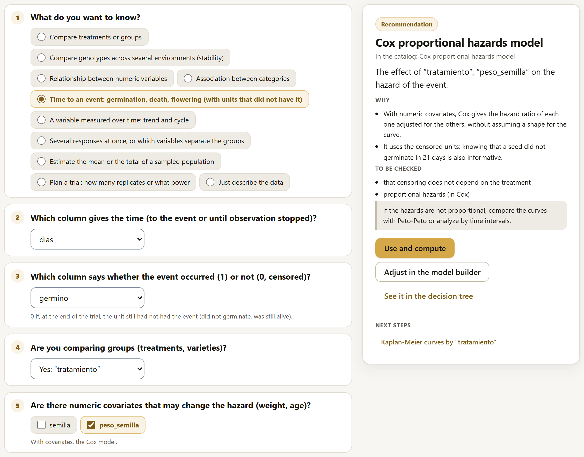
Two questions deserve special care, because the data almost never answer them (section 2.13): whether any factor was applied to main plots (irrigation, tillage, sowing date: then it is a split plot or a strip plot, and each factor has its own error) and whether the same unit was measured several times (repeated measures). Answering them wrongly does not produce a visible error, but wrong F tests.
The exception is plots: if the table has a column that numbers them (parcela, subparcela, franja…), the assistant recognizes in the data split plots (a factor that does not change within each plot of the block), split-split plots and strip plots, proposes them in its question and, in the recommendation, says what it saw. Without blocks, the plot is taken as the replicate of each main plot. What you answer in the question prevails. The “Wheat: irrigation × variety” example comes this way.
4.3The catalog
The catalog shows the block’s 74 analyses, grouped in their 17 families, and tells you which ones can be run with the loaded table.
At the top, two cards read the data:
- With your data: what is in the table (rows, numeric columns, factors with their levels, blocks, plots, dates, counts, proportions and 0/1 columns) and how many analyses can be run with it (with the maize example, “You can run 57 of the 74 analyses in the catalog with this table.”).
- Recommended for your data: the analysis the assistant proposes from what it sees in the table, with its why and, under Next:, the analyses that usually follow, each as a button. The assistant’s questions refine the choice (section 4.2).
Below, each family shows its analyses on cards, with the analysis’s illustration, its name, what it is for and its status: Ready with your data; Missing, with what is missing (with the maize example, the MANOVA says “Missing: at least two numeric responses.”); or No data needed. Those that run in the R engine say so (R engine, section 4.6). The ⓘ icon on each card opens the analysis’s fact sheet in Fundamentals (chapter 9). Next to the name of each family you can read how many of its analyses can be run (with the maize example, Experimental designs says “8 of 9 with your data”).
Three controls narrow down the list: the text search (Search: Tukey, blocks, counts, regression…), the Only the ones I can run with my data checkbox, which is remembered, and the family selector (All families).
Clicking a card opens the analysis: the catalog collapses into a bar with the Selected analysis and the Open the catalog (74 analyses) button to open it again, and below it appear, on the left, its form (the experiment model: which column is the response, which are the treatments, the block and the options) and, on the right, the result, which is recomputed whenever you change any field. With no data loaded, the catalog only offers the calculations that do not need them: sample size and power (section 4.22).
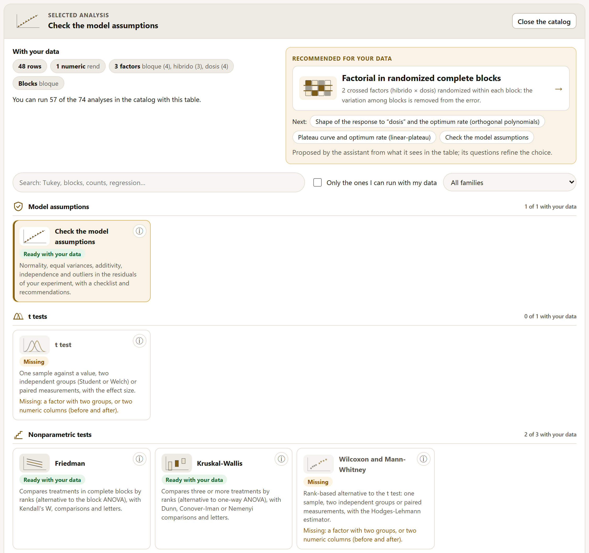
When you open a method, the app proposes the variables of its form from the data (the response, the factors, the block it recognizes), just as the assistant does. With another table, the proposals are redone; with changes to the same table, the choices already made are respected.
A method appears in the catalog only if all its validation cases against R passed (chapter 8). If for some reason one were not validated, in its place you would read “This analysis does not yet have an approved validation against R.” It is the accuracy rule of section 1.2 applied to the interface.
Sections 4.7 to 4.24 go through the families in catalog order. For each method they explain what it is for, what the form asks for, what it delivers and what its R equivalent is.
4.4The model builder
The builder starts from a simple idea: an analysis is a model, and a model says what role each variable plays. On the left are the table’s variables; on the right, eight zones, one per role. Below, the resulting formula and the analysis the app chose for it.
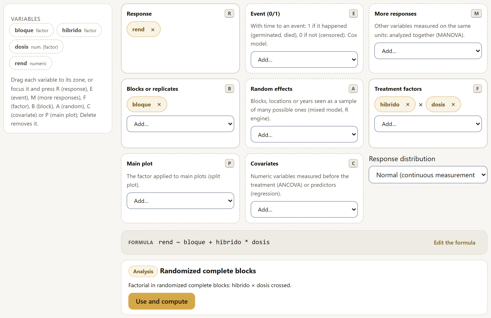
rend ~ bloque + hibrido * dosis and the analysis, randomized complete blocks.Putting each variable in its zone
There are three ways, so that it works with a mouse, with a keyboard and on a phone:
- drag the variable from the list to the zone;
- choose it in the Add… menu of each zone;
- with the variable focused (with Tab or a click), press the zone’s key: R, E, M, B, A, F, P or C. Delete removes it from its zone.
A variable already in use is dimmed in the list; the ✕ on each chip returns it. The zones that accept only numeric variables (response, event, more responses, covariates) offer only those in their menu.
| Zone | Key | What it is for |
|---|---|---|
| Response | R | The variable that was measured (or the time to an event). |
| Event (0/1) | E | With time to an event: 1 if it happened (germinated, died), 0 if not (censored). It builds the Cox model. |
| More responses | M | Other variables measured on the same units, to analyze them together (MANOVA). |
| Blocks or replicates | B | One (complete blocks), or two (rows and columns: Latin square). |
| Random effects | A | Blocks, locations or years seen as a sample of many possible ones: mixed model, in the R engine. |
| Treatment factors | F | The factors that were applied; several are crossed (×). |
| Main plot | P | The factor that was applied to main plots (split plot); it must also be among the factors. |
| Covariates | C | Numeric variables measured before the treatment (ANCOVA) or predictors (regression). |
The Response distribution selector says what the response is like: Normal (a continuous measurement), Count (Poisson) or Positive and skewed (gamma). The last two lead to generalized linear models (section 4.17).
Which analysis it chooses
The app reads the zones and chooses the corresponding analysis from the catalog, with the same logic a statistician would use:
| If the zones have… | …the analysis is |
|---|---|
| Factors, no blocks | Completely randomized (factorial if there are several) |
| Factors and one block | Randomized complete blocks |
| Factors and two blocks (row and column) | Latin square (up to two factors) |
| Two factors, one on a main plot, and one block | Split plot (with two blocks, in a Latin square) |
| Three factors, one on a main plot, and one block | Split-split plot |
| Only covariates | Linear regression (with blocks, the general linear model) |
| Factors and covariates (up to 2 and 2, with at most one block) | ANCOVA |
| Some random effect | Linear mixed model (R engine); with a main plot, also its error (1 | bloque:parcela) |
| Count or gamma distribution | Generalized linear model; with random effects, the generalized linear mixed model (Poisson or gamma, in the R engine) |
| An event | Cox model (the block as a stratum); without factors or covariates, Kaplan-Meier |
| More responses | MANOVA (with the block and the factors crossed) |
| Any other combination (more than three factors, covariates with plots…) | The general linear model, with a warning |
Below the formula, the analysis box names it, explains the decision (“Factorial in randomized complete blocks: hibrido × dosis crossed.”) and offers Use and compute, which opens it in the catalog with everything already set.
Writing the formula by hand
Edit the formula turns the formula into a text field with R notation. As you type, the app explains each term: which variable it is, whether it is a factor or a covariate, whether it is an interaction or a nested effect.
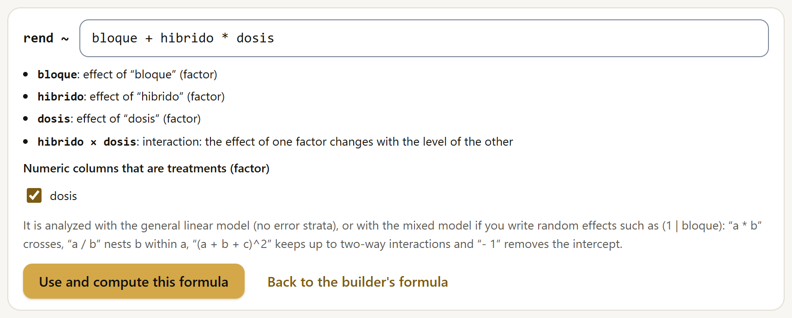
| You type | It means |
|---|---|
a + b | The main effects of a and b. |
a * b | Crosses: a, b and their interaction a × b. |
a:b | Only the interaction. |
a / b | Nests b within a. |
(a + b + c)^2 | The main effects and all two-way interactions. |
- 1 | Removes the intercept. |
(1 | bloque) | A random effect: the formula is fitted with the mixed model in the R engine. |
The Numeric columns that are treatments (factor) checkboxes say which numeric columns are treated as a factor (a rate with four levels) and which as a covariate. Use and compute this formula analyzes it with the general linear model (without error strata: for a split plot, the dedicated method is the better choice) or, if it has random effects, with the mixed model; with a count or gamma distribution, with the generalized model. Back to the builder's formula undoes what you typed. With an event or with several responses, the formula comes from the zones and cannot be edited by hand.
When the model cannot be built
If the zones ask for something that no SigmaPro analysis does, the box offers not an analysis but the problem and its fix:
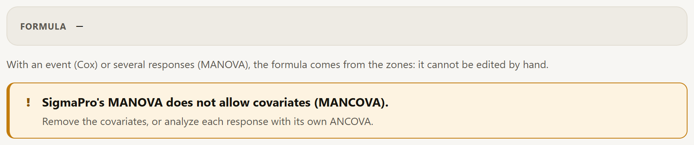
4.5How to read a result
The results of the Analysis block have the parts of those in Explore (section 3.2) and a few more. Figure 4.7 shows the top part of the maize analysis in randomized complete blocks, and figure 4.8, its first two tables.
![The result of the randomized complete blocks analysis of the maize example: the title with the computing time, What is this analysis?, Present and Add to report; the level-of-detail buttons Basic, Standard and Expert, with Standard selected; the In a nutshell box: yield changes with the hybrid, highest in H-66, 6.36, and lowest in H-40, 5.53, and with the rate, highest at 120, 6.74, and lowest at 0, 4.47, the effect of the hybrid does not depend on the rate and the experimental error is 3.6% of the grand mean, a low CV; the conclusion: hybrid and rate with differences, the interaction without evidence, grand mean 5.938, CV 3.6% and R² 0.969; the hybrid × rate interaction plot with one line per rate; and the Compare the means of this design button](../img/en/b4-resultado.png)
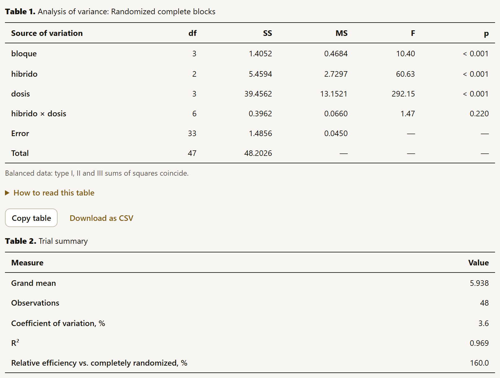
| Part | What it is |
|---|---|
| Title | The analysis, with the computing time, ⓘ What is this analysis?, which opens its fact sheet in Fundamentals (chapter 9), Present, which shows it as slides (below), and Add to report. |
| Level of detail | Below the title, Basic, Standard and Expert: how much of the result is shown (below, “Three levels of detail”). |
| In a nutshell | A box with the result without statistical symbols, in up to four sentences (below, “In a nutshell”). |
| Conclusion | One sentence per effect or per key result, with its statistic and its p value: “hibrido: there are differences (F = 60.635, p < 0.001).” At the end, the fit indicators (grand mean, CV, R²). |
| Assumption traffic light | In the tests that depend on assumptions (t tests, regression, ANCOVA, generalized models…), one line per assumption in green, amber or red, with its icon and the test that decides it (section 4.7); if any of them fails, Try the alternative offers the analysis that addresses it. In the designs, the analysis of variance has no traffic light: its assumptions are checked with Check the model assumptions (section 4.7); in the report, those of completely randomized and randomized complete blocks designs are checked automatically. |
| Charts | The ones that correspond to the analysis: the interaction of two factors, the means with their standard error, the regression line with its bands, the residual diagnostics, the survival curves… At the top, the Chart theme selector changes the style of all of them at once (the six themes are in table 6.1). Each chart has its legend and the ✎ button of the figure editor (chapter 6). |
| Next step | Buttons that lead to the analysis that usually follows: Compare the means of this design in the designs, Analyze the chosen model after a variable selection, the CSV for other apps in the multivariate analyses. |
| Tables | Numbered, each with Copy table and Download as CSV (with the full numbers, without the on-screen rounding): the analysis of variance, the trial summary, the means, the comparisons… A table wider than the screen scrolls sideways; with the keyboard, Tab focuses it and the arrow keys scroll it. |
| How to read this table | Collapsed below each table that includes a statistic with a reading guide: one gauge per statistic with its interpretation card and the reference curve of each test (figures 4.9 and 4.10, below). |
| How to report it (APA) | Collapsed after the tables: the methods and results paragraphs in APA 7 style, in Spanish and in English, ready to copy (below). |
| Equivalent R code | Collapsed at the end, with Copy the code. |
| Continue in the LABG suite | At the foot of some analyses, a strip with the suite app that continues the work: AgriDesign after an experimental design, CorrelationPro and PCAPro after a correlation or a regression, PCAPro and ClusteringPro after the multivariate or multi-environment analyses. Each card says why it is worthwhile and can be hidden (chapter 10). |
How to read this table
Below each table that includes a statistic with a published reading guide there is a closed drop-down, How to read this table. It is drawn when you open it, so it does not slow down the result. It contains two things:
- One gauge per statistic. A scale divided into the zones of its guide, with a triangle at the value of each row of the table (with more than twelve values, dots and the count per zone). Below are the value with its zone and the guide that defines it, with a note when the guide has nuances. The magnitude zones (the p, the effect sizes, the R²) are in golds, from light to dark; the quality zones (the CV, the collinearity, the residuals), in green, amber and red, like the assumption traffic light. Table 4.1 brings the guides together.
- The interpretation card of each gauge. A few sentences that translate the value with the numbers of the case: what part of the variation the R² explains, what the error standard deviation amounts to according to the CV and the grand mean, how many times the number of replicates the relative efficiency stands for, how many standard deviations separate two means, how often a result like this would occur if there were no effect (the p)… With several values, it says which ones fall in each zone: the terms with p < α, the residuals beyond ±2 and ±3, the observations beyond 4/n in Cook’s distance. Collapsed, What it is gives the definition of the statistic, and In the glossary opens its entry in the glossary, with “See it in action” (section I.6).
- The reference curve of each test. For each F, t, z or χ² in the table (up to eight), the density with the degrees of freedom of that test: the dashed line is the critical value at the analysis α, the colored line is the observed value and the shaded area is the p. If the value lies beyond the chart, an arrow announces it (“60.6 →”). In designs with several errors (split plots, strip plots), each F is drawn with the degrees of freedom of its own error. If the table gives an adjusted or exact p, a note says so: the curve shows the one from the reference distribution. Below each curve, a sentence says whether the value passes the critical value (“Before the critical value 2.39: p = 0.220 ≥ α = 0.05.”).
![How to read this table below the trial summary: the coefficient of variation, 3.57%, in the low (high precision) zone of a scale from 0 to 50 in green, light green, amber and red, with its card: the error standard deviation, 0.212, is 3.57% of the grand mean, 5.94, and the link to set the guide; the R², 0.969, in the large zone, with its card: the model explains 96.9% of the variation; and the relative efficiency vs. completely randomized, 160%, in the precision gained zone, with its card: with a completely randomized design, 1.60 times the number of replications would have been needed](../img/en/b4-lectura-resumen.png)
![How to read this table, open below the maize analysis of variance: the p-value gauge, a logarithmic scale from 0.0001 to 1 with the zones very strong, strong, sufficient and insufficient and the α line at 0.05, with the list bloque, hibrido and dosis below 0.001, very strong, and hibrido × dosis 0.220, insufficient; and four F curves, one per term, with the dashed critical value: bloque, hibrido and dosis with arrows to 10.4, 60.6 and 292, outside the chart, and hibrido × dosis with F = 1.47 and the area of the p, 0.220, shaded; the p card says that 3 of 4 terms have p below α and each curve says whether the value passes the critical value](../img/en/b4-lectura.png)
At the foot, Sources of the guides gives the full references (they are also in appendix D). The guides are conventions that orient the reading, not rules: the crop, the variable and the trial weigh more. A CV of 25% can be good in a pest count and bad in grain yield; that is why the CV guide can be changed (below). Some gauges depend on the context: the CV gauge does not appear in the descriptives of Explore (there the CV is that of the data, not that of the error of a trial), the gauge for Cramér’s V adjusts its limits to the size of the table and the gauge for Cook’s distance uses 4/n with the number of observations in the analysis.
| Statistic | Zones | Guide |
|---|---|---|
| p value (also the adjusted one) | very strong < 0.001; strong < 0.01; sufficient < α; insufficient from α. A line marks the analysis α. | Wasserstein and Lazar (2016) |
| Cohen’s d and h, Hedges’ g (absolute value) | small from 0.2; medium from 0.5; large from 0.8 | Cohen (1988) |
| Cohen’s f | small from 0.10; medium from 0.25; large from 0.40 | Cohen (1988) |
| Pearson’s r, Spearman’s ρ, φ (absolute value) | small from 0.1; medium from 0.3; large from 0.5 | Cohen (1988) |
| Cramér’s V | those of φ divided by √(min(rows, columns) − 1) | Cohen (1988) |
| R² and adjusted R² | small from 0.02; medium from 0.13; large from 0.26 | Cohen (1988) |
| Power | adequate from 0.80 | Cohen (1988) |
| η² of H (Kruskal-Wallis) | small from 0.01; medium from 0.06; large from 0.14 | Tomczak and Tomczak (2014) |
| Kendall’s W | small from 0.1; medium from 0.3; large from 0.5 | Tomczak and Tomczak (2014) |
| Odds ratio | small from 1.68; medium from 3.47; large from 6.71. A ratio below 1 is read by its inverse. | Chen, Cohen and Chen (2010) |
| Cohen’s κ | worse than chance < 0; slight up to 0.20; fair up to 0.40; moderate up to 0.60; substantial up to 0.80; almost perfect | Landis and Koch (1977) |
| Coefficient of variation of the trial (general guide) | low < 10%; medium < 20%; high < 30%; very high from 30% | Pimentel-Gomes (2009) |
| Relative efficiency, % | precision gained from 100% | Gomez and Gomez (1984) |
| Heritability | low < 0.3; medium < 0.6; high from 0.6 | Johnson, Robinson and Comstock (1955) |
| Variance inflation factor | no worrying collinearity < 5; moderate < 10; severe from 10 | James et al. (2013) |
| Condition index | weak < 10; moderate < 30; strong from 30 | Belsley, Kuh and Welsch (1980) |
| Durbin-Watson | no apparent autocorrelation from 1.5 to 2.5; possible from 1 to 1.5 and from 2.5 to 3; strong outside 1 to 3 | Durbin and Watson (1950) |
| Studentized residual (absolute value) | common < 2; uncommon < 3; possible outlier from 3 | Montgomery, Peck and Vining (2012) |
| Cook’s distance | check from 4/n; influential from 1 | Bollen and Jackman (1990); Cook and Weisberg (1982) |
| Skewness (absolute value) | approximately symmetric < 0.5; moderate < 1; marked from 1 | Bulmer (1979) |
| AIC difference | substantial support < 2; considerably less support < 7; very little support < 10; essentially no support from 10 | Burnham and Anderson (2002) |
The CV guide for your crop and variable
Below the CV gauge, Set the CV guide for your crop and variable changes the guide used to read the CV in all open tables, in Analysis and in the report; the choice is remembered in the browser. There are three options under Guide:
- Field trials in general: that of Pimentel-Gomes (2009), the one the app comes with (table 4.1).
- Maize: seven variables with the limits of Fritsche-Neto et al. (2012), derived from the CVs of the trials published in Brazil from 2005 to 2010 (table 4.2). Two rows of the original table (lodging and days to flowering) do not agree with the mean and the standard deviation that the same article publishes and were left out.
- Own limits: the crop, the variable and the three limits (Low up to, Medium up to, High up to), typed by hand or computed with Compute them from the CVs of similar trials (Garcia, 1989): low up to the mean of those CVs minus one standard deviation, medium up to the mean plus one, high up to the mean plus two and very high beyond (figure 4.11). They are applied with Apply my limits.
| Variable | Low up to | Medium up to | High up to |
|---|---|---|---|
| Grain yield | 8.24 | 15.49 | 19.11 |
| Plant height | 3.55 | 8.25 | 10.60 |
| Ear height | 4.58 | 10.76 | 13.85 |
| Ear diameter | 3.82 | 13.78 | 18.75 |
| Ears per plant | 6.13 | 19.26 | 25.81 |
| Weight of commercial ears | 10.46 | 17.37 | 20.82 |
| Weight of 100 grains | 4.81 | 20.04 | 27.66 |
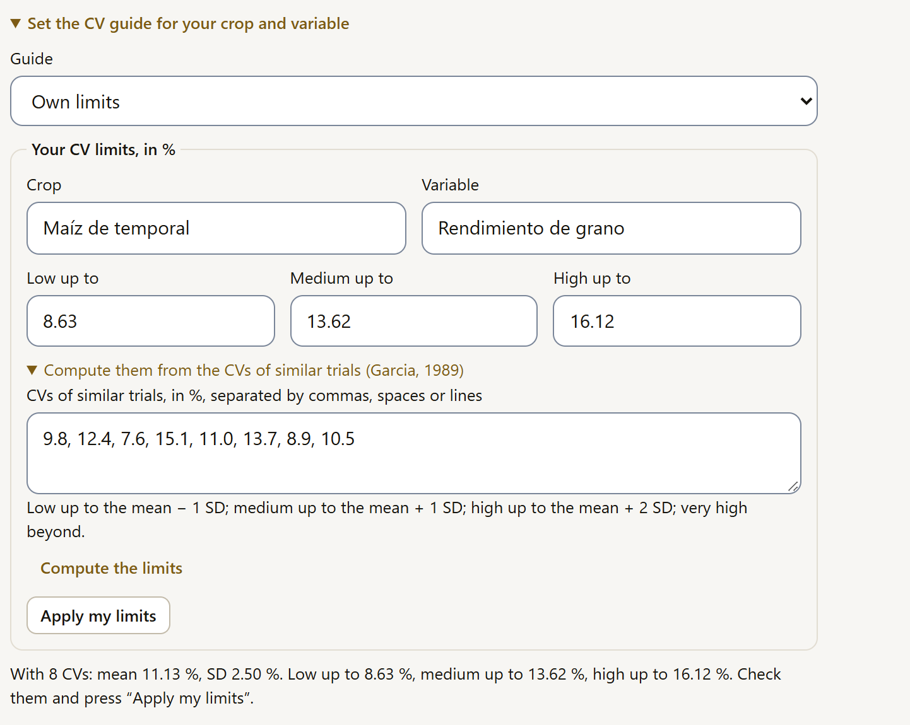
Three levels of detail
Below the title of each result, and in the report header, three buttons choose how much is shown. The level applies to the whole app (Analysis, Explore and the report) and is remembered in the browser. It does not change any number or what is exported.
| Level | What is shown |
|---|---|
| Basic | In a nutshell instead of the conclusion with the statistics (if the analysis has no such box, the conclusion), the charts, the traffic light, How to report it (APA) and, open below the name of each table (“Reading · Table 1. …”), its reading: gauges, cards and curves (figure 4.12). The tables with their notes and buttons, the R code and the technical details are hidden; a table without a reading guide does not appear. In Explore the table is the summary itself and is always shown. |
| Standard | The whole result, as described in this section. It is the level the app opens with. |
| Expert | Everything in Standard plus the Technical notes: method, inputs, options, data, rows used, software and computing time, with the model and its hypotheses taken from the fact sheet in Fundamentals (chapter 9). The notes, How to report it (APA) and the R code appear open (figure 4.13). |
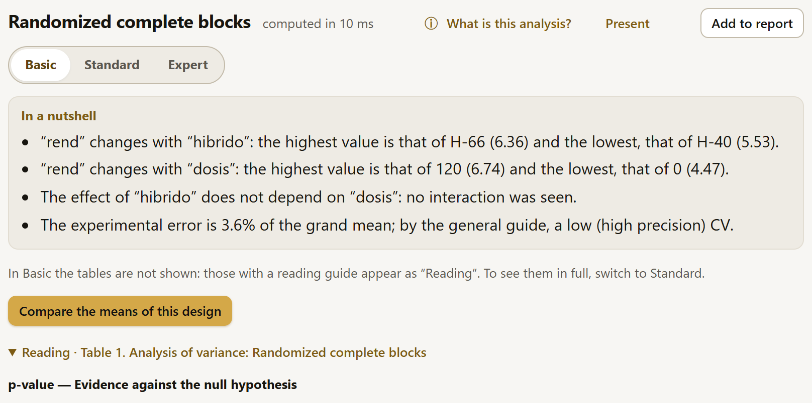
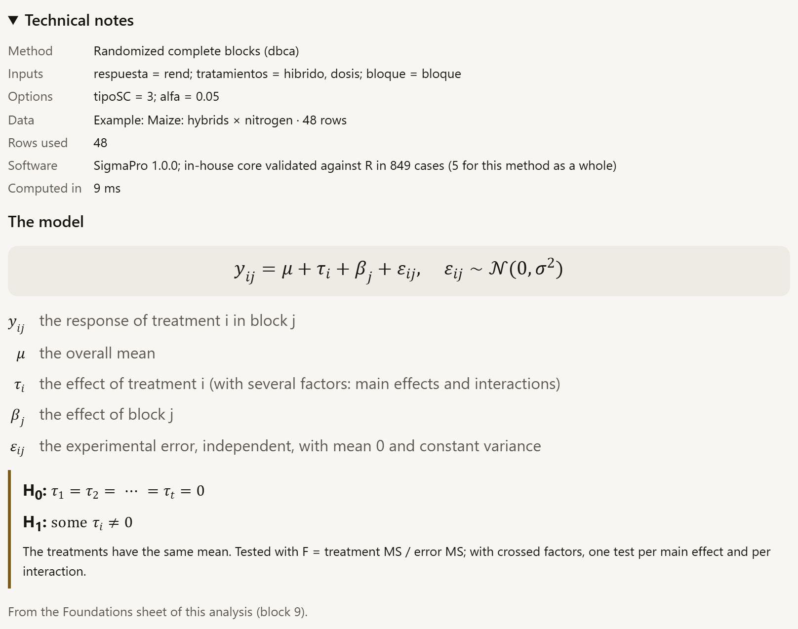
In a nutshell
Above the conclusion, a box states the result without statistical symbols, in up to four sentences, for those who do not read an analysis of variance table (figure 4.7). It computes nothing new: it reads what the analysis already gave.
- In experimental designs it is built from the ANOVA table and the means of each factor: which factor changes the response, with its highest and lowest levels and their means; whether there is an interaction; and the precision of the trial, with the CV and its guide. A factor with no effect at the analysis α is stated like this: “With these data, … does not appear to change…”; with two levels, which one is higher. If there is an interaction, the box advises comparing the means of one factor within each level of the other.
- In the other analyses they are the sentences of the conclusion without the parentheses or the parts with statistics (F, t, p, degrees of freedom, intervals). Sentences that would say nothing without the statistics are dropped, as are technical ones, such as the one about letters in common. With Within each level of (section 4.11), each sentence starts with its level: “‘hibrido’ H-40: 3 groups of means…”.
Conclusion: The mean of “A” (0.314) differs from that of “B” (0.677): difference −0.362 (95% CI: −0.572 to −0.153); t = −3.729, df = 13.21, p = 0.002. Effect size: large (Hedges’ g = −1.470; 95% CI: −2.342 to −0.572).
In a nutshell: The mean of “A” (0.314) differs from that of “B” (0.677). Effect size: large.
At the Basic level the box is shown and the technical conclusion is hidden; at Standard and Expert, both are shown. The box appears in Analysis and in the report; in Explore it is not needed, because there the conclusion is already in words.
How to report it (APA)
After the tables, the How to report it (APA) drop-down gives the Methods paragraph and the Results paragraph of the analysis, the same ones as in the report (section 5.4), with the conventions of APA 7 style (figure 4.14):
- statistical symbols in italics (F, t, p, r, n, M…); Greek letters, not;
- the p and the statistics that cannot exceed 1 (r, R², η², Cramér’s V, κ, Kendall’s W) without the leading zero: F(2, 33) = 60.63, p < .001; R² = .969;
- commas between the statistics within the same parentheses, confidence intervals in square brackets (in the t test of the poisons, 95% CI [−0.5722, −0.1528]) and the mean as M;
- in English, the percent sign attached to the number (3.6%); in Spanish, separated from it (3.6 %).
![How to report it (APA) open below the maize analysis, on the English tab: Methods, with the analysis of variance for a randomized complete block design with a 3 × 4 hibrido by dosis factorial arrangement, the citation of Gomez and Gomez (1984) and type III sums of squares; Results, with F in italics and its degrees of freedom, p without a leading zero, as p less than .001 and p equal to .220, the grand mean 5.938, the coefficient of variation 3.6% and R² equal to .969; a Copy button below each paragraph and the note on APA 7 style](../img/en/b4-reportar.png)
The Español and English tabs change the language of the text, not that of the app: the paragraph is built with the same figures and with the names of the methods, the designs and the citations in that language (when the app is in Spanish, the first time English is requested the app loads it in an instant). Copy, below each paragraph, copies it with its italics, which a word processor keeps when you paste it. As in the report, it is a starting point: review the wording, replace the column names with full names and add the agronomic interpretation.
The drop-down is in Analysis, in the assumption check (section 4.7), in Explore and in each analysis of the report. It is built when you open it, so it does not slow down the result; at the Expert level it appears open.
In the Analysis block the result is explored: options are changed, models are tried. When you add it to the report (chapter 5), SigmaPro adds what a document requires: the paragraphs of all the analyses in a single text, with the citation of each test and that of SigmaPro, the technical details and the numbering of tables and figures across the whole report.
Presenting the result
The Present button, in the title of the result, shows it as full-screen slides with large type, for projecting it in a class or a meeting without putting together a separate presentation. Each part of the result is a slide, in the order in which it appears: the title, In a nutshell, the conclusion, each chart and each table with its notes (figure 4.15). What is presented is what is shown at the chosen level of detail: at Basic there are no tables, and whatever is collapsed is left out.
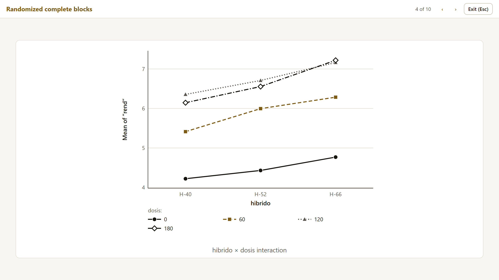
The ← and → arrow keys (or Page Up, Page Down and the spacebar) change slides; Home and End go to the first and the last one; Esc exits and leaves the focus on Present. The slides are copies without buttons: they do not change the result. The same button is in Explore (section 3.2) and in the report header, where it presents all the analyses one after another, with the name of each one in the bar (section 5.2).
When it cannot be computed
If an analysis cannot be computed with the chosen data and options, instead of the result a box appears with what happened, in words, and What to do:, the fix (figure 4.16). It is the same in Analysis, in Explore and in the report.
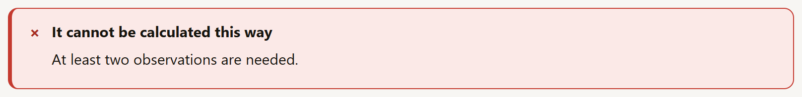
- A data problem (a column that should be numeric, one that no longer exists, one in two roles, too few data, a factor left with a single level) comes with its fix. It is almost always in Data: the column type, the missing values or the filter.
- An R engine error (section 4.6) is explained in words when it is one of the known mixed-model errors: a random effect with a single level or with as many levels as observations, a response with the same value in every row, a model that does not converge or that is too complex for the data. The original R text remains below, in Technical detail, collapsed and with Copy the detail.
- A program error is stated as such: it is not a data problem. The box suggests changing some option or reloading the page and, if it happens again, reporting it with the Report a problem icon in the header (number 6 in figure I.1), pasting the technical detail.
4.6The R engine inside the browser
Almost all SigmaPro analyses are programmed in the app’s own core, in JavaScript, and validated against R. A few, those that require the fitting machinery of mixed models, run in a full R that works inside the browser (webR, R compiled to WebAssembly): linear mixed models and their designs (section 4.15), repeated measures and generalized linear mixed models (section 4.17). The data do not leave the computer here either: R runs in the same tab.
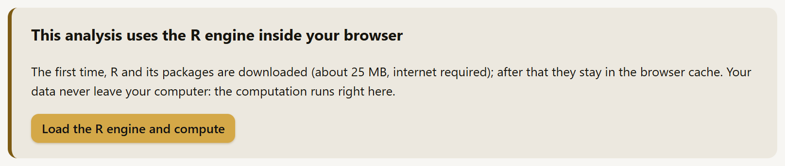
- The first time, the notice in figure 4.17 appears instead of the result. Load the R engine and compute downloads R and its packages (about 25 MB) and computes.
- Meanwhile, above the result you can read each step (“Downloading the R engine (the first time takes longer)…”, “Installing lme4 in the R engine (first time only)…”, “Computing in the R engine…”) and a Cancel button. The first load takes from a few seconds to a couple of minutes, depending on the connection; a computation, a few seconds.
- Afterwards, the engine stays in the browser cache: internet is no longer needed and it does not ask again.
When SigmaPro is used published on a web page (not by double-clicking), it brings its own R engine repository and works offline from the first visit (section I.7).